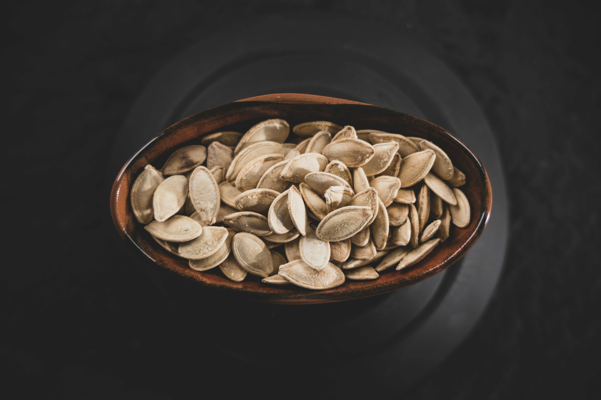

When Halloween comes 'round and you're carving up jack-o'-lanterns left and right, don't let those seeds go to waste! Instead, try making this simple and tasty treat!
Pumpkin seeds can also be roasted in the oven, which, in a way, is set it and forget it. However, I find that after carving up a bunch of pumpkins, I don't have the patience to go about setting up the oven and waiting for it to pre-heat. Instead, I just use a frying pan. This way also makes it easier to taste your seeds as they cook to make sure you get the perfect degree of toastiness!
Some toasted pumpkin seed recipes also have you soak or marinate the seeds overnight, but who has time for that?! With this recipe, you just mix up the ingredients and start frying them in the pan!
No need to wash them! In fact, you want to have a little bit of pumpkin pulp on them—it adds to the flavor! Just get the really big pieces of pumpkin off of them.
You can use many different oils to toast your pumpkin seeds. Three of my favorites are olive oil, sesame oil, and plain-old canola oil. Canola oil gives a very simple, clean flavor. Olive oil gives you a richer flavor, and is my normal choice. Sesame oil gives you a more smoky flavor.
Olive oil and sesame oil are low smoke point oils, meaning they start releasing stinky smoke at lower temperatures than, for example, canola oil. Therefore, you have to be a little more gentle and careful with them. If you're a less confident chef, consider going with canola oil or vegetable oil your first time!
You'll want to mix the seeds and the oil with a spoon or your hand, etc. to make sure.
I find that adding just enough salt to where, when I mix it all up with the seeds and oil, the seeds feel just slightly "gritty" with salt works well, but if you're not sure, err on the side of caution and add less salt. As you cook the seeds, you can taste them and add salt as you like.
If you are using canola oil or another high smoke point oil, you can get away with a higher heat, but I find taking your time over a lower heat tends to produce the tastiest results, anyway.
Make sure to stir the seeds occasionally. When they start to hiss/make a very high-pitched squealing sound, they're getting close to done and you can start taste-testing them, but it will still probably take several more minutes before they're fully done. If the seeds don't seem salty enough, you can add a little more salt at this stage, but they will probably end up tasting just a little more salty when they're fully cooked, so bear that in mind.
Another way to tell they're getting close to done is by how they feel when you stir them with a spatula. They will start to feel lighter, and the seeds will begin to feel like thin wood chips when you stir them.
The end goal is for the entire seed, including the shell, to be edible. You want that outer shell to be so crisp, it practically breaks apart like a flaky croissant when you bite it. If, when you bite a seed, its shell is still "chewy," it's not done yet. You also have to be careful, however, not to overcook the seeds. While you ultimately want the seeds to be a golden brown, the seeds will often appear more pale in the frying pan than they will after you take them out and they cool off, so I recommend focusing on the texture, instead.